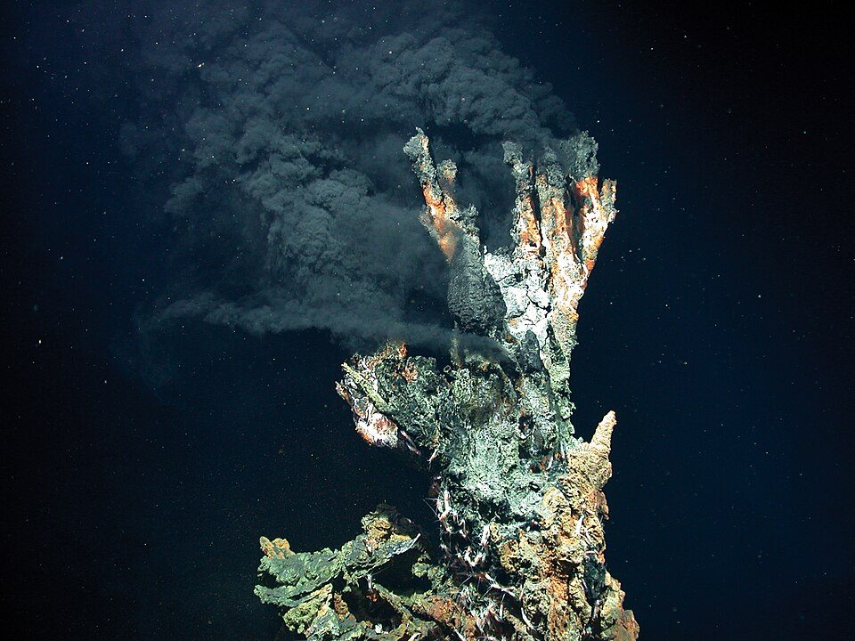

Life in the deep sea
Total darkness, cold and crushing pressure: even so, the deep sea is full of creatures that make their own light.


Below 200 metres, sunlight barely reaches; below 1,000 metres, the darkness is total. The water is at 2–4 °C and the pressure rises by one atmosphere every 10 metres. For centuries people thought nothing could live down there. Today we know the deep sea is the largest habitat on the planet.
The ocean's layers
| Zone | Depth | What it is like |
|---|---|---|
| Sunlight | 0 to 200 m | Enough light for photosynthesis; most marine life lives here |
| Twilight | 200 to 1,000 m | Bluish gloom; animals that rise to feed at night |
| Midnight | 1,000 to 4,000 m | Total darkness; the only light is made by animals themselves |
| Abyssal | 4,000 to 6,000 m | The great plains of the ocean floor |
| Hadal | Over 6,000 m | The trenches, such as the Mariana Trench |
Lights in the dark
Around three quarters of deep-sea animals make their own light: this is bioluminescence. They use it to lure prey, confuse predators, camouflage themselves or find a mate. The anglerfish carries a kind of fishing rod on its head with a light on the tip, home to glowing bacteria. In some species the much smaller male fuses permanently with the female's body.
Every night, billions of fish, squid and crustaceans rise from the twilight zone to the surface to feed and sink back down at dawn. It is the largest daily migration on the planet.
Oases without sunlight
In 1977 the submersible Alvin was exploring a mid-ocean ridge near the Galápagos Islands, 2,500 metres down, when its crew found something no one expected: chimneys spewing water at more than 350 °C, surrounded by tube worms over two metres long, giant clams and white crabs. These were hydrothermal vents.


Here, life does not depend on the Sun. Bacteria draw energy from chemicals in the hot water, such as hydrogen sulphide, through chemosynthesis, and feed the whole ecosystem. Many scientists think life on Earth may have begun in places like these, which is why similar oceans are being sought on moons such as Europa and Enceladus.
Giants and oddities
- The giant squid, up to 12 metres long, was for centuries a sailors' legend, the kraken. It was not photographed alive in its habitat until 2004 or filmed until 2012.
- The colossal squid of the Antarctic is even heavier and has the largest eyes in the animal kingdom, the size of a football.
- The blobfish, famous for looking like a sad, jelly-like lump, actually looks quite normal at 1,000 metres: it deforms when brought up and loses the pressure.
- In 2022 a snailfish was filmed at 8,336 metres, the deepest fish ever observed.
Videos to understand it better
- What’s Hiding at the Most Solitary Place on Earth? The Deep SeaKurzgesagt – In a Nutshell · 25.8M views
- The Strangest Creatures of the Ocean | BBC EarthBBC Earth · 6.9M views
Videos are from YouTube and belong to their creators. They only load when you click them. See all videos →